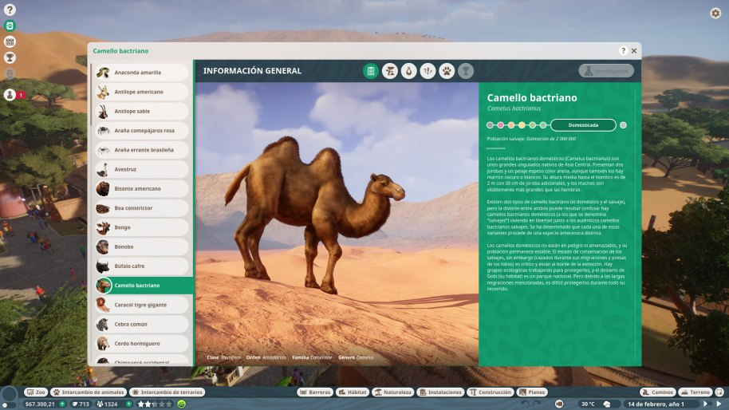
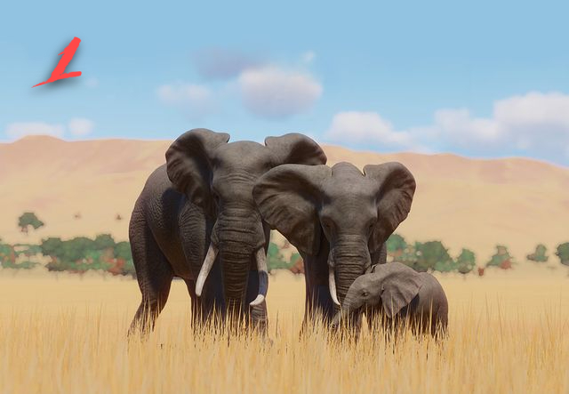
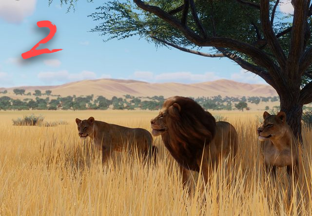
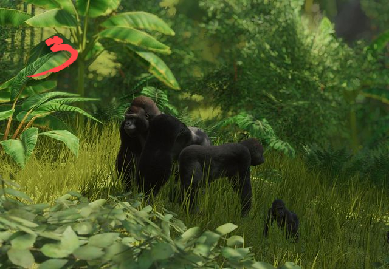
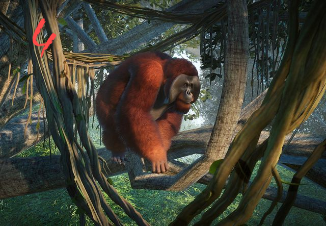
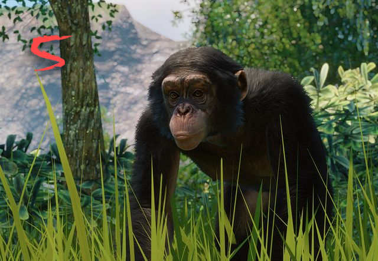
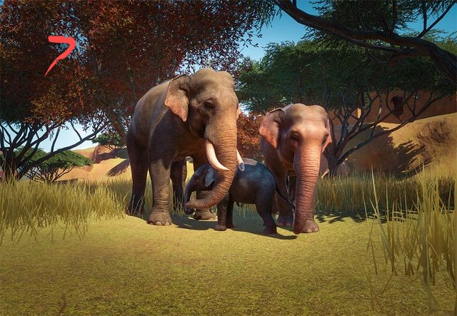
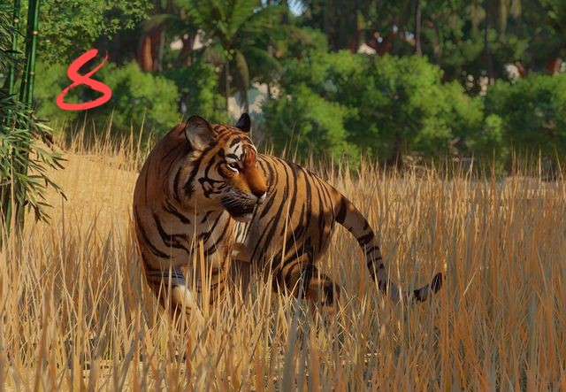

¿Como puedo tener los animales más atractivos?
Para tener los animales más atractivos, hay que fijarse en diversas opciones, la primera opción es bajar al apartado donde se
se indican los animales más atractivos, o la siguiente opción, y que recomiendo, es según de donde provenga cada animal y el trato
que haya recibido, va a tener más puntos de atractivos para visitantes o menos. Esta opción la podemos ver en el mercado de animales,
y en él podemos aplicar un filtro, para que nos muestre los más atractivos, (cuanto mayor puntos de atractivo tenga, mayor visitantes vas a tener).

Top animales

Elefante africano

León del África occidental

Gorila occidental de llanura

Orangután de Borneo

Chimpancé occidental

Bonobo

Elefante Indio
